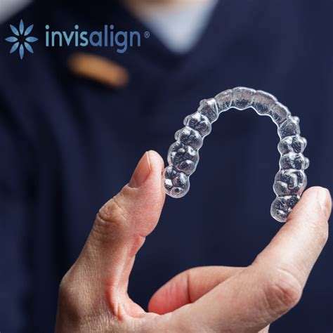

Back to treatments
Invisalign
Invisalign is a series of clear aligners you take out to eat and to clean your teeth. The aim is to move crooked or crowded teeth without fixed braces.
RISIO, a UK aligner, is discussed when a different system is a better fit.

TimelineAligners every 1 to 2 weeks. Often 12 to 18 months.
AppointmentsReview every 6 to 8 weeks
What the treatment involves
- Consultation A 3D scan models the smile and checks that aligners are suitable.
- Planning A series of custom aligners is made.
- Wear Aligners are changed every 1 to 2 weeks and reviewed every 6 to 8 weeks.
- Retention A retainer holds the result. Treatment often takes 12 to 18 months.
Who it may suit
- Aligners are worn 20 to 22 hours a day and removed to eat or drink anything other than water.
- Mild tightness for a few days after each change is expected.
- Brush and floss before the aligners go back in.